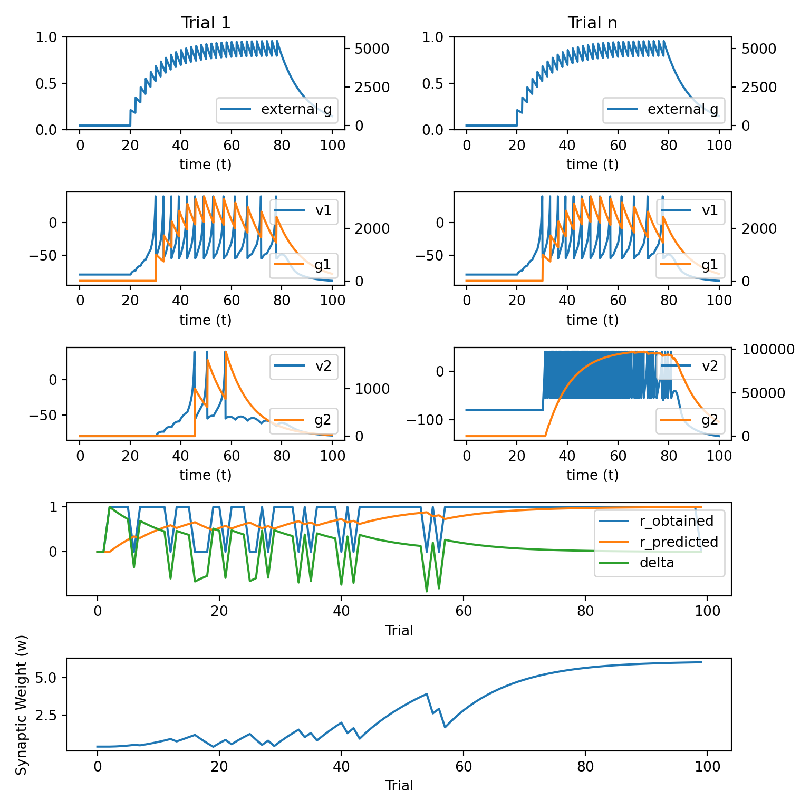
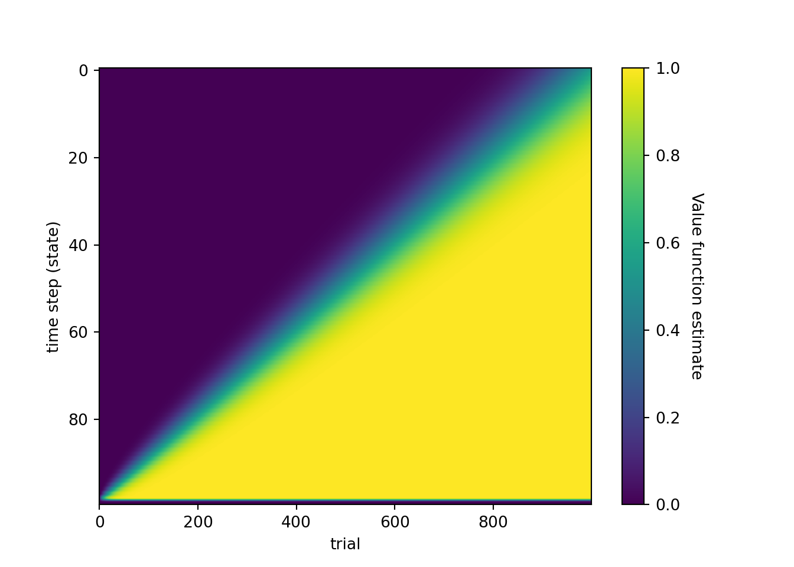
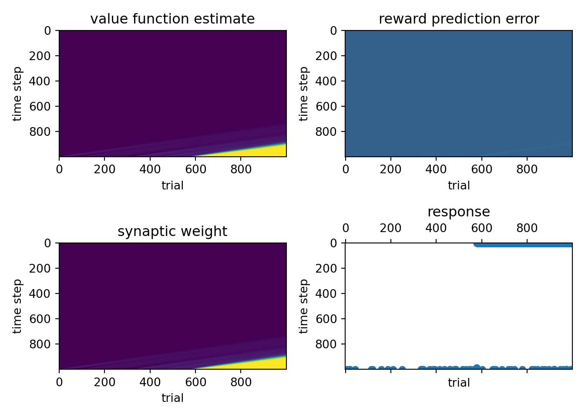
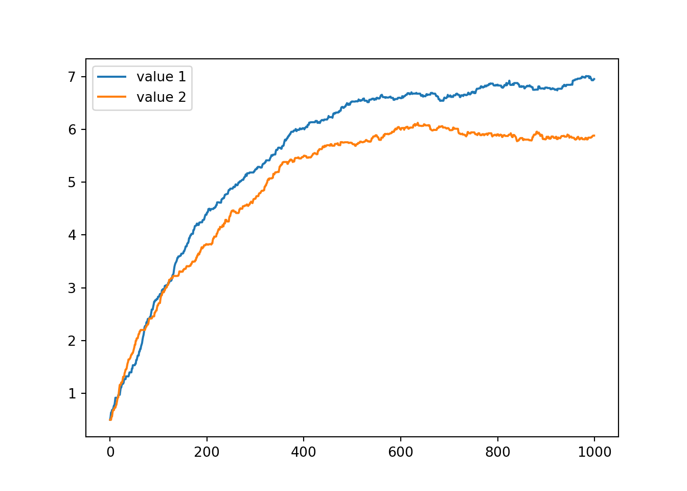
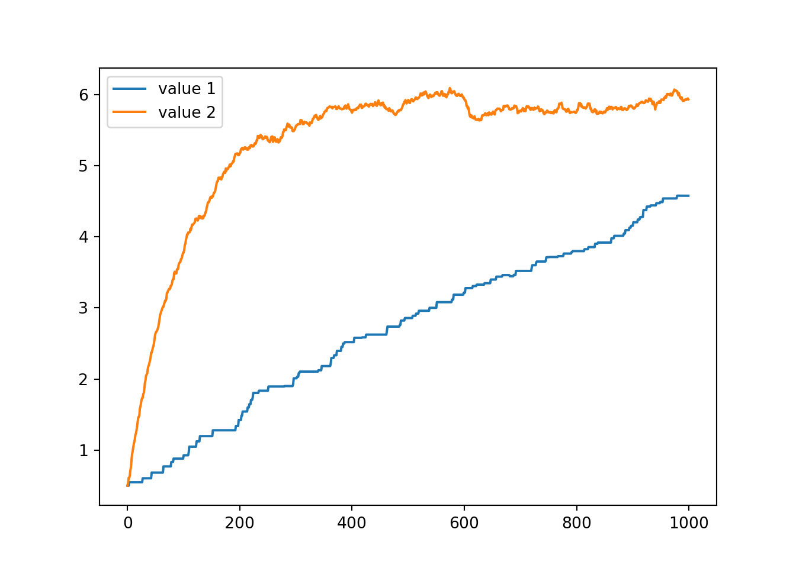
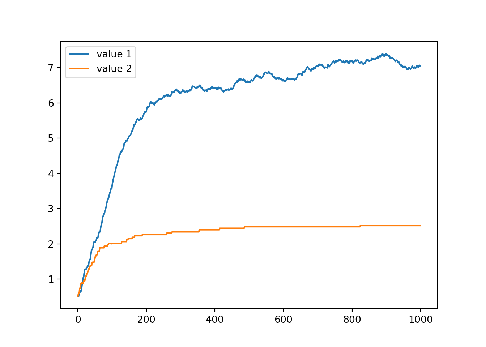
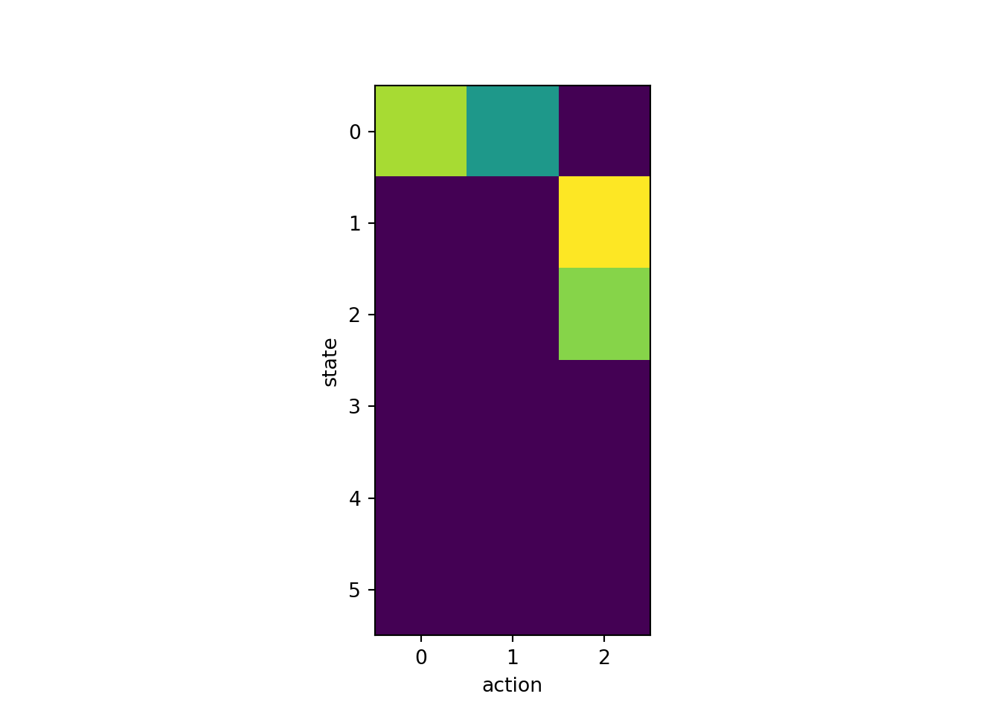
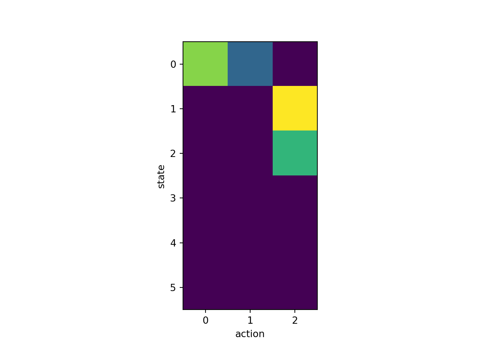
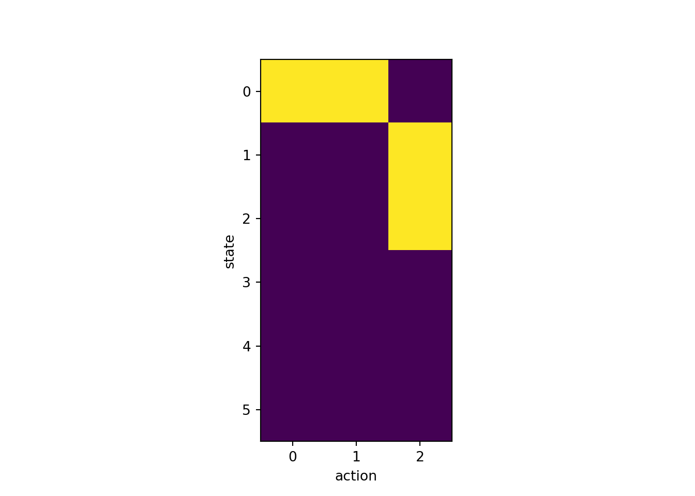

14 Example 3
In the previous example, we programmed the model to make responses / earn rewards completely randomly.
Next, lets give the model some more agency by allowing it to make responses / earn rewards whenever the output of neuron 2 crosses a threshold.
def simulate_network_inst_2(update_weight_func):
global trl, r_obtained, r_predicted
for j in range(n_trials - 1):
trl = j
for i in range(1, n):
dt = t[i] - t[i - 1]
# external input
dgdt = (-g[i - 1] + psp_amp * spike[i - 1]) / psp_decay
g[i] = g[i - 1] + dgdt * dt
# neuron 1
dvdt1 = (k * (v1[i - 1] - vr) *
(v1[i - 1] - vt) - u1[i - 1] + w_01[trl] * g[i - 1]) / C
dudt1 = a * (b * (v1[i - 1] - vr) - u1[i - 1])
dgdt1 = (-g1[i - 1] + psp_amp * spike1[i - 1]) / psp_decay
v1[i] = v1[i - 1] + dvdt1 * dt
u1[i] = u1[i - 1] + dudt1 * dt
g1[i] = g1[i - 1] + dgdt1 * dt
if v1[i] >= vpeak:
v1[i - 1] = vpeak
v1[i] = c
u1[i] = u1[i] + d
spike1[i] = 1
# neuron 2
dvdt2 = (k * (v2[i - 1] - vr) *
(v2[i - 1] - vt) - u2[i - 1] + w_12[trl] * g1[i - 1]) / C
dudt2 = a * (b * (v2[i - 1] - vr) - u2[i - 1])
dgdt2 = (-g2[i - 1] + psp_amp * spike2[i - 1]) / psp_decay
v2[i] = v2[i - 1] + dvdt2 * dt
u2[i] = u2[i - 1] + dudt2 * dt
g2[i] = g2[i - 1] + dgdt2 * dt
if v2[i] >= vpeak:
v2[i - 1] = vpeak
v2[i] = c
u2[i] = u2[i] + d
spike2[i] = 1
# press lever / earn reward on a random 25% of all trials
if np.random.uniform(0, 1) > 0.25:
r_obtained[trl] = 1
# also press the lever / earn reward if neuron 2 is
# sufficiently active
if g2.sum() > resp_thresh:
r_obtained[trl] = 1
# update synaptic weights
delta_w = update_weight_func()
w_12[trl + 1] = w_12[trl] + delta_w
# store trial info
g_record[trl, :] = g
v1_record[trl, :] = v1
g1_record[trl, :] = g1
v2_record[trl, :] = v2
g2_record[trl, :] = g2
plot_results()
n_trials = 100
trl = 0
tau = 0.1
T = 100
t = np.arange(0, T, tau)
n = t.shape[0]
C = 50
vr = -80
vt = -25
vpeak = 40
k = 1
a = 0.01
b = -20
c = -55
d = 150
psp_amp = 1e5
psp_decay = 10
g = np.zeros(n)
spike = np.zeros(n)
spike[200:800:20] = 1
alpha = 3e-14
beta = 3e-14
gamma = 0.1
resp_thresh = 4e7
array_dict = init_arrays()
r_predicted = array_dict['r_predicted']
# NOTE: redefine r_obtained to be all zeros, so that the
# network simulation can populate it on the fly
# r_obtained = array_dict['r_obtained']
r_obtained = np.zeros(n_trials)
delta = array_dict['delta']
v1 = array_dict['v1']
u1 = array_dict['u1']
g1 = array_dict['g1']
spike1 = array_dict['spike1']
v2 = array_dict['v2']
u2 = array_dict['u2']
g2 = array_dict['g2']
spike2 = array_dict['spike2']
w_01 = array_dict['w_01']
w_12 = array_dict['w_12']
g_record = array_dict['g_record']
v1_record = array_dict['v1_record']
g1_record = array_dict['g1_record']
v2_record = array_dict['v2_record']
g2_record = array_dict['g2_record']
update_weight_func = update_weight_rl
simulate_network_inst_2(update_weight_func)
14.1 Reinforcement learning framework
- An agent can occupy a discrete set of states \(S\) and can take a discrete set of actions \(A\) from each state as determined by some policy \(\pi\).
\[ S = \{s_1, s_2, \ldots, s_n\} \\ A = \{a_1, a_2, \ldots, a_n\} \\ \pi \rightarrow P(a_i | s_j) \]
The actions \(a_i\) taken by the agent determine the probability that the state will transition from \(s_i\) to \(s_j\), and also determine the probability of current and future reward (because rewards are causally determined by states).
The goal of the agent is to learn to take actions that maximize current and future reward. That is, the RL agent tries to determine the state-value function \(V_{\pi}(s)\) of a given policy \(\pi\) as a function of each state \(s\).
\[ \begin{align} V_{\pi}(s) &= \operatorname{E}[R | \pi, s] \nonumber \\ &= \operatorname{E} \left[ \sum_{t=0}^{\infty} \gamma^t r_t | \pi, s \right]. \end{align} \]
Here, \(\gamma\) is a temporal discounting factor that allows the agent to care more about near rewards than about distant future rewards.
The fundamental goal of RL is to estimate \(V_{\pi}(s)\) using nothing more than the experience an agent gains while navigating its environment. The specific way in which an RL algorithm does this varies greatly from one algorithm to the next, and is still very much an active area of research.
14.2 Estimating the state-value function
RL aims to learn state-value function through experience.
The general structure is to give the agent many trials of experience, where on each trial the agent visits some sequence of states by taking some sequence of actions.
A trial of experience comes to an end whenever a terminal state is visited, but in principle, goes on forever until such a state is experienced.
The layout of an RL program will generally look something like the following:
Iterate over episodes
Specify the policy \(\pi\) to be evaluated
Initialise \(V(s)\)
Initialise \(S\)
Iterate over steps per episodes
\(A \leftarrow\) action given by \(\pi\) for \(S\)
Take action \(A\), observe \(R\), \(S'\)
Update value function \(V\)
\(S \leftarrow S'\)
If \(S = S_{\text{terminal}}\) then break
- Put in
Pythonpseudo code:
import numpy as np
import matplotlib.pyplot as plt
n_trials = 10
# specify the set of states
states = np.array([1, 2, 3])
n_states = states.shape[0]
# initialise value estimate
v = np.zeros((n_trials, n_states))
for trial in range(n_trials):
terminate = False
while not terminate:
# select action (using policy pi)
# transition to new state (determined by environment)
# possibly receive reward (determined by environment)
# update value estimate of newly arrived in state
# (variety of RL algorithms for this -- e.g., TD
# learning (see below))
# check if current state is terminal
# if s == 3:
# terminate = True
# for now just set to True to avoid infinite while loop
terminate = True14.3 Temporal difference (TD) learning
TD RL estimates the state-value function under the assumption that the action policy is fixed.
The term temporal in TD learning refers to the difference between successive visits to a particular state (across trials), not necessarily across different times within a trial.
TD learning simply tries to iteratively update its estimate of a states value by directly experiencing them, comparing what was experienced to what was expected, and updating its expectation to more closely match recent experience.
Let \(n\) index the current trial, \(s\) be the state just arrived in, \(s'\) be the next future state (knowable because TD assumes a fixed action selection policy), and \(\hat{V}_{n}(s)\) be the state-value function estimate on trial \(n\) of state \(s\).
TD learning updates the state-value function across trials as follows:
\[ \begin{equation} \hat{V}_{n}(s) = \hat{V}_{n-1}(s) + \alpha (r_{n}(s) + \gamma \hat{V}_{n-1}(s') - \hat{V}_{n-1}(s)). \end{equation} \]
The term \(r_{n}\) is the reward that was delivered upon arrival to the current state \(s'\).
\(\hat{V}_{n-1}(s')\) is the reward that is expected to arrive in future states visited beyond \(s'\). This value has to come from the the state-value function estimate in the previous trial \(n-1\) because the agent has not yet experienced states beyond \(s'\) in the current trial.
\(\alpha\) is called the learning rate and \(\gamma\) is the temporal discounting parameter.
Notice that you can write the value update as follows:
\[ \begin{equation} \hat{V}_{n}(s) = (1-\alpha) (\hat{V}_{n-1}(s)) + \alpha (r_{n}(s) + \gamma \hat{V}_{n-1}(s')). \end{equation} \]
In this form it may be easier to see that the update to our estimate of the state-value function is a weighted average of whatever it was on the previous trial with whatever current reward was experienced and future reward is expected from the newly arrived in state \(s'\).
In the psuedo code notation used by your RL book it looks like this:
Iterate over episodes
Specify the policy \(\pi\) to be evaluated
Initialise \(V(s)\)
Initialise \(S\)
Iterate over steps per episodes
\(A \leftarrow\) action given by \(\pi\) for \(S\)
Take action \(A\), observe \(R\), \(S'\)
\(V(S) \leftarrow V(S) + \alpha \left[ R + \gamma V(S') - V(S) \right]\)
\(S \leftarrow S'\)
If \(S = S_{\text{terminal}}\) then break
14.3.1 TD RL model of classical conditioning
Consider the classic Pavlov’s dog experiment.
States are taken to be time steps between cue onset and reward delivery, which occurs on every trial at time step \(T\) with magnitude \(r\).
The value update equation then becomes:
\[ \begin{equation} \hat{V}_{n}(t) = \hat{V}_{n-1}(t) + \alpha (r_{n}(t) + \gamma \hat{V}_{n-1}(t+1) - \hat{V}_{n-1}(t)) \end{equation} \]
To get a feel for how this works, consider the first few trials.
\(n=1, t=T\)
_{0} for all \(t\) by assumption of initial conditions.
\(r_{1}(T)=r\) because the dog receives a reward on each trial at time \(T\).
This leads to the following:
\[ \begin{align} \hat{V}_{1}(T) &= \hat{V}_{0}(t) + \alpha [r_{1}(T) + \gamma \hat{V}_{0}(T+1) - \hat{V}_{0}(T)] \\ &= \alpha r \\\\ \end{align} \]
\(n=2, t=T-1\)
\(\hat{V}_{1}(T-1)=0\) because at time \(T-1\) of trial \(1\) the agent has not yet received any rewards.
\(r_{2}(T-1)=0\) because rewards are delivered only at time \(T\), not at time \(T-1\).
\(\hat{V}_2(T-1)=\alpha r\) as we showed above.
This leads to the following:
\[ \begin{align} \hat{V}_{2}(T-1) &= \hat{V}_{1}(T-1) + \alpha [r_{2}(T-1)+ \gamma \hat{V}_{1}(T) - \hat{V}_{1}(T-1)] \\ &= \alpha^2 \gamma r \end{align} \]
In other words, the reward prediction error \(\delta\) that occurred at time \(T\) on trial \(1\) has propagated back on trial \(2\) to the immediately preceding state (i.e., \(T−1\)).
Similarly, on trial \(3\), the positive value associated with state \(T-1\) will propagate back to state \(T-2\).
In this way, the value associated with earlier and earlier states will increase.
This propagation will continue until it eventually reaches the time of cue presentation – that is, until \(\hat{V}_{n}(0) > 0\), for some value of \(n\).
It will not propagate to earlier times than this however, so long as cue presentation times are unpredictable.
We can implement this simple system in
pythoncode as follows:
import numpy as np
import matplotlib.pyplot as plt
n_trials = 1000
n_steps = 100
v_init = 0.0
alpha = 0.1
gamma = 1
v = np.zeros((n_steps, n_trials))
v[:, 0] = v_init
for n in range(1, n_trials):
for t in range(n_steps - 1):
s = t
sprime = t + 1
r = 1 if s == (n_steps - 2) else 0
v[s, n] = v[s, n - 1] + alpha * (r + gamma * v[sprime, n - 1] - v[s, n - 1])
fig, ax = plt.subplots(1, 1, squeeze=False)
pos = ax[0, 0].imshow(v, aspect='auto')
ax[0, 0].set_xlabel('trial')
ax[0, 0].set_ylabel('time step (state)')
cbar = fig.colorbar(pos, ax=ax[0, 0])
cbar.ax.get_yaxis().labelpad = 15
cbar.ax.set_ylabel('Value function estimate', rotation=270)
plt.show()
14.3.2 TD RL as the learning signal in a spiking network
Schultz, W., Dayan, P., & Montague, P. R. (1997). A Neural Substrate of Prediction and Reward. Science, 275(5306), 1593–1599.
In my opinion, one of the coolest ever stories to emerge from computational neuroscience is the idea that dopamine encodes the reward prediction error of TD RL system, and that this prediction error signal drives learning in the basal ganglia.
Here, we will consider a simple spiking network consisting of two neurons \(A \rightarrow B\) in which the synaptic strength connecting them is learned using the TD RL reward prediction error.
import numpy as np
import matplotlib.pyplot as plt
import matplotlib.gridspec as gridspec
def init_arrays():
resp = np.zeros((n, n_trials))
# TD arrays
v = np.zeros((n, n_trials))
r = np.zeros((n, n_trials))
rpe = np.zeros((n, n_trials))
v1 = np.zeros(n)
u1 = np.zeros(n)
g1 = np.zeros(n)
spike1 = np.zeros(n)
v1[0] = vr
v2 = np.zeros(n)
u2 = np.zeros(n)
g2 = np.zeros(n)
spike2 = np.zeros(n)
v2[0] = vr
w_01 = 0.4 * np.ones(n_trials)
# needs to be 2D since it changes every time step
w_12 = 0.4 * np.ones((n, n_trials))
g_record = np.zeros((n_trials, n))
v1_record = np.zeros((n_trials, n))
g1_record = np.zeros((n_trials, n))
v2_record = np.zeros((n_trials, n))
g2_record = np.zeros((n_trials, n))
return {
'resp': resp,
'v': v,
'r': r,
'rpe': rpe,
'v1': v1,
'u1': u1,
'g1': g1,
'spike1': spike1,
'v2': v2,
'u2': u2,
'g2': g2,
'spike2': spike2,
'w_01': w_01,
'w_12': w_12,
'g_record': g_record,
'v1_record': v1_record,
'g1_record': g1_record,
'v2_record': v2_record,
'g2_record': g2_record
}
def simulate_network_inst_TD():
global trl, r_obtained, r_predicted
for j in range(n_trials - 1):
trl = j
# press lever / earn reward on a random % of all trials
if np.random.uniform(0, 1) > 0.95:
# press lever / earn reward at the end of the trial
resp[-2, trl] = 1
r[-2, trl] = 1
for i in range(1, n - 1):
dt = t[i] - t[i - 1]
# external input
dgdt = (-g[i - 1] + psp_amp * spike[i - 1]) / psp_decay
g[i] = g[i - 1] + dgdt * dt
# neuron 1
dvdt1 = (k * (v1[i - 1] - vr) *
(v1[i - 1] - vt) - u1[i - 1] + w_01[trl] * g[i - 1]) / C
dudt1 = a * (b * (v1[i - 1] - vr) - u1[i - 1])
dgdt1 = (-g1[i - 1] + psp_amp * spike1[i - 1]) / psp_decay
v1[i] = v1[i - 1] + dvdt1 * dt
u1[i] = u1[i - 1] + dudt1 * dt
g1[i] = g1[i - 1] + dgdt1 * dt
if v1[i] >= vpeak:
v1[i - 1] = vpeak
v1[i] = c
u1[i] = u1[i] + d
spike1[i] = 1
# neuron 2
dvdt2 = (k * (v2[i - 1] - vr) * (v2[i - 1] - vt) - u2[i - 1] +
w_12[i - 1, trl] * g1[i - 1]) / C
dudt2 = a * (b * (v2[i - 1] - vr) - u2[i - 1])
dgdt2 = (-g2[i - 1] + psp_amp * spike2[i - 1]) / psp_decay
v2[i] = v2[i - 1] + dvdt2 * dt
u2[i] = u2[i - 1] + dudt2 * dt
g2[i] = g2[i - 1] + dgdt2 * dt
if v2[i] >= vpeak:
v2[i - 1] = vpeak
v2[i] = c
u2[i] = u2[i] + d
spike2[i] = 1
# check for response if none has been made yet
if resp[:, trl].sum() == 0:
# press the lever / earn reward if neuron 2 is sufficiently active
if g2.sum() > resp_thresh:
resp[i, trl] = 1
r[-2, trl] = 1
# update TD value function estimate
rpe[i, trl] = r[i, trl] + gamma * v[i + 1, trl - 1] - v[i, trl - 1]
v[i, trl] = v[i, trl - 1] + alpha * rpe[i, trl]
# update synaptic weights
delta_w = alpha_w * rpe[i, trl]
w_12[i + 1, trl] = w_12[i, trl] + delta_w
# store trial info
g_record[trl, :] = g
v1_record[trl, :] = v1
g1_record[trl, :] = g1
v2_record[trl, :] = v2
g2_record[trl, :] = g2
# plot_results
fig, ax = plt.subplots(2, 2, squeeze=False)
ax.flatten()[0].imshow(v, aspect='auto')
ax.flatten()[1].imshow(rpe, aspect='auto')
ax.flatten()[2].imshow(w_12, aspect='auto')
ax.flatten()[3].spy(resp, aspect='auto', marker='o', markersize=5)
ax.flatten()[0].set_title('value function estimate')
ax.flatten()[1].set_title('reward prediction error')
ax.flatten()[2].set_title('synaptic weight')
ax.flatten()[3].set_title('response')
[x.set_xlabel('trial') for x in ax.flatten()]
[x.set_ylabel('time step') for x in ax.flatten()]
plt.tight_layout()
plt.show()
n_trials = 1000
trl = 0
tau = 0.1
T = 100
t = np.arange(0, T, tau)
n = t.shape[0]
C = 50
vr = -80
vt = -25
vpeak = 40
k = 1
a = 0.01
b = -20
c = -55
d = 150
psp_amp = 1e5
psp_decay = 10
g = np.zeros(n)
spike = np.zeros(n)
spike[200:800:20] = 1
# the _w notation is to distinguish from the TD params below
alpha_w = 2e1
# TD params
v_init = 0.0
alpha = 0.25
gamma = 1
resp_thresh = 3e5
array_dict = init_arrays()
resp = array_dict['resp']
rpe = array_dict['rpe']
v = array_dict['v']
r = array_dict['r']
v1 = array_dict['v1']
u1 = array_dict['u1']
g1 = array_dict['g1']
spike1 = array_dict['spike1']
v2 = array_dict['v2']
u2 = array_dict['u2']
g2 = array_dict['g2']
spike2 = array_dict['spike2']
w_01 = array_dict['w_01']
w_12 = array_dict['w_12']
g_record = array_dict['g_record']
v1_record = array_dict['v1_record']
g1_record = array_dict['g1_record']
v2_record = array_dict['v2_record']
g2_record = array_dict['g2_record']
simulate_network_inst_TD()
14.4 TD(0) for estimating \(v_{\pi}\)
TD(0) is about prediction, not about control
You can see this in the algorithm description below in that the policy \(\pi\) is fixed and specified at the top of the program.
Iterate over episodes
Specify the policy \(\pi\) to be evaluated
Initialise \(V(s)\)
Initialise \(S\)
Iterate over steps per episodes
\(A \leftarrow\) action given by \(\pi\) for \(S\)
Take action \(A\), observe \(R\), \(S'\)
\(V(S) \leftarrow V(S) + \alpha \left[ R + \gamma V(S') - V(S) \right]\)
\(S \leftarrow S'\)
If \(S = S_{\text{terminal}}\) then break
14.4.1 TD in a simple 2-arm bandit task
This is a very simple scenario in which the agent begins in state \(s_0\) and can select only one of two actions. Action \(a_1\) selects the slot machine on the left and leads to state \(s_l\), and action \(a_2\) selects the slot machine on the right and leads to state \(s_r\). Reward is delivered in state \(s_l\) and \(s_r\) with different probability, and both are terminal states.
Let \(n\) index the current trial and \(\hat{V}_{n}(s)\) be the state-value function estimate on trial \(n\) of state \(s\in\{s_l,s_r\}\). In the 2-armed bandit task descirbed above, TD iteratively updates its estimate of \(\hat{V}_{n}(s)\) according to the following:
\[ \begin{equation} \hat{V}_{n}(s) = \hat{V}_{n-1}(s) + \alpha (r_{n} - \hat{V}_{n-1}(s)). \end{equation} \]
The rightmost term \(r_{n} - \hat{V}_{n-1}(s)\) is called the reward prediction error (RPE).
Conceptually, RPE is simply the difference between the obtained and expected reward.
It is easy to see that learning a good estimate of the value function is equivalent to eliminating RPE.
RPE is often notated as \(\delta\), so we can write \(\delta_{n}=r_{n}-\hat{V}_{n-1}(s)\).
You can also write the value update equation in the following form:
\[ \begin{equation} \hat{V}_{n}(s) = (1-\alpha) \hat{V}_{n-1}(s) + \alpha r_{n}. \end{equation} \]
In this form it may be easier to see that the update to our estimate of the state-value function is a weighted average of whatever it was on the previous trial with whatever current reward was experienced.
In code, a TD agent performing a 2-armed bandit task in which it simply chooses which bandit to select at random looks as follows:
import numpy as np
import matplotlib.pyplot as plt
n_trials = 1000
v_init = 0.5
p_reward_1 = 7
p_reward_2 = 6
alpha = 0.01
epsilon = 0.2
v = np.zeros((2, n_trials))
v[:, 0] = v_init
for i in range(0, n_trials - 1):
# action selection - guessing
if np.random.uniform() < 0.5:
# reward
r = np.random.normal(p_reward_1, 2)
# reward prediction error
delta = r - v[0, i]
# value update
v[0, i + 1] = v[0, i] + alpha * delta
v[1, i + 1] = v[1, i]
else:
# reward
r = np.random.normal(p_reward_2, 2)
# reward prediction error
delta = r - v[1, i]
# value update
v[1, i + 1] = v[1, i] + alpha * delta
v[0, i + 1] = v[0, i]
fig, ax = plt.subplots(1, 1, squeeze=False)
ax[0, 0].plot(v[0, :], label='value 1')
ax[0, 0].plot(v[1, :], label='value 2')
plt.legend()
plt.show()
14.4.2 Action selection policy
We saw above that even if the agent simply guesses at each bandit, never modifying its action selection strategy to reflect its updating beliefs about the value of the the two options, the estimate of the value function still approaches the true value.
This makes clear that some amount of guessing (i.e., exploration) is good for learning the value function, but perhaps not so great for actually maximising the obtained rewards (the actual goal of an RL agent).
Two popular action selection policies – epsilon greedy (\(\epsilon\)-greedy) and softman – attempt to balance exploration with exploitation.
14.4.2.1 Epsilon greedy
import numpy as np
import matplotlib.pyplot as plt
n_trials = 1000
v_init = 0.5
p_reward_1 = 7
p_reward_2 = 6
alpha = 0.01
epsilon = 0.2
v = np.zeros((2, n_trials))
v[:, 0] = v_init
for i in range(0, n_trials - 1):
# action selection - greedy epsilon
if np.random.uniform() < epsilon:
a = np.round(np.random.uniform())
else:
a = np.argmax(v[:, i])
if a == 0:
# reward
r = np.random.normal(p_reward_1, 2)
# reward prediction error
delta = r - v[0, i]
# value update
v[0, i + 1] = v[0, i] + alpha * delta
v[1, i + 1] = v[1, i]
else:
# reward
r = np.random.normal(p_reward_2, 2)
# reward prediction error
delta = r - v[1, i]
# value update
v[1, i + 1] = v[1, i] + alpha * delta
v[0, i + 1] = v[0, i]
fig, ax = plt.subplots(1, 1, squeeze=False)
ax[0, 0].plot(v[0, :], label='value 1')
ax[0, 0].plot(v[1, :], label='value 2')
plt.legend()
plt.show()
14.4.2.2 Softmax
import numpy as np
import matplotlib.pyplot as plt
n_trials = 1000
v_init = 0.5
p_reward_1 = 7
p_reward_2 = 6
alpha = 0.01
epsilon = 0.2
v = np.zeros((2, n_trials))
v[:, 0] = v_init
for i in range(0, n_trials - 1):
# action selection - softmax
sm = np.exp(v[:, i]) / np.sum(np.exp(v[:, i]))
if np.random.uniform() < sm[0]:
# reward
r = np.random.normal(p_reward_1, 2)
# reward prediction error
delta = r - v[0, i]
# value update
v[0, i + 1] = v[0, i] + alpha * delta
v[1, i + 1] = v[1, i]
else:
# reward
r = np.random.normal(p_reward_2, 2)
# reward prediction error
delta = r - v[1, i]
# value update
v[1, i + 1] = v[1, i] + alpha * delta
v[0, i + 1] = v[0, i]
fig, ax = plt.subplots(1, 1, squeeze=False)
ax[0, 0].plot(v[0, :], label='value 1')
ax[0, 0].plot(v[1, :], label='value 2')
plt.legend()
plt.show()
14.5 SARSA for estimating \(Q\)
SARSA – state-action-reward-state-action – attempts to learn \(Q(s, a)\), called the action-value function, which represents the value (or quality hence the \(Q\)) of taking action \(a\) in state \(s\).
The policy that controls behaviour is derived from \(Q\) and that makes SARSA about both prediction and control.
SARSA is called on policy because the only \(Q\) values that are learned about are those that correspond to state-action pairs that were directly experienced.
Iterate over episodes
Initialise \(S\)
Choose \(A\) from \(S\) using policy derived from \(Q\) (e.g., \(\epsilon\)-greedy)
Iterate over steps per episodes
Take action \(A\), observe \(R\), \(S'\)
Choose \(A'\) from \(S'\) using policy derived from \(Q\) (e.g., \(\epsilon\)-greedy)
\(Q(S, A) \leftarrow Q(S, A) + \alpha \left[ R + \gamma Q(S', A') - Q(S, A) \right]\)
\(S \leftarrow S'\), \(A \leftarrow A'\)
If \(S = S_{\text{terminal}}\) then break
14.6 Q-learning for estimating \(\pi\)
Like SARSA, Q-learning attempts to learn \(Q(s, a)\).
Again like SARSA, Q-learning is about both prediction and control.
Q-learning is called off policy because the \(Q\) values that are learned about are not necessarily only those that correspond to state-action pairs that were directly experienced.
Initialise \(Q(s, a)\)
Iterate over episodes
Initialise \(S\)
Iterate over steps per episodes
Choose \(A\) from \(S\) using policy derived from \(Q\) (e.g., \(\epsilon\)-greedy)
Take action \(A\), observe \(R\), \(S'\)
\(Q(S, A) \leftarrow Q(S, A) + \alpha \left[ R + \gamma \max_{a} Q(S', a) - Q(S, A) \right]\)
\(S \leftarrow S'\)
If \(S = S_{\text{terminal}}\) then break
14.6.1 Q-learning applied to instrumental conditioning
import numpy as np
import matplotlib.pyplot as plt
n_episodes = 100
n_steps = 10
n_states = 6
n_actions = 3
alpha = 0.1
# initialise q(s,a)
q = np.ones((n_states, n_actions)) * 0.5
# iterate over episodes
for e in range(n_episodes):
# initialise s
s = 0
# iterate over steps per episodes
for t in range(n_steps):
# choose a from s using policy derived from q
# here, we use softmax
sm = np.exp(q[s, :]) / np.sum(np.exp(q[s, :]))
a = np.random.choice([0, 1, 2], size=1, p=np.squeeze(sm))
# take action a, observe r, s'
if s==0:
# press lever
if a == 0:
r = 0
sprime = 1
# pull chain
elif a == 1:
r = 0
sprime = 2
# enter magazine
elif a == 2:
r = 0
sprime = 3
elif s==1:
# press lever
if a == 0:
r = 0
sprime = 3
# pull chain
elif a == 1:
r = 0
sprime = 3
# enter magazine
elif a == 2:
r = 1
sprime = 4
elif s==2:
# press lever
if a == 0:
r = 0
sprime = 3
# pull chain
elif a == 1:
r = 0
sprime = 3
# enter magazine
elif a == 2:
r = 1
sprime = 5
# update q-function
q[s, a] += alpha * (r + np.max(q[sprime, :]) - q[s, a])
# reset state
s = sprime
# stop if s is terminal
if s == 3 or s == 4 or s == 5:
break
fig, ax = plt.subplots(1, 1, squeeze=False)
ax[0,0].imshow(q)
ax[0, 0].set_xlabel('action')
ax[0, 0].set_ylabel('state')
plt.show()
14.6.2 Q-learning applied to instrumental conditioning 2
import numpy as np
import matplotlib.pyplot as plt
n_episodes = 100
n_steps = 10
n_states = 6
n_actions = 3
alpha = 0.1
# initialise q(s,a)
q = np.ones((n_states, n_actions)) * 0.5
# states
S = np.arange(0, 6, 1)
# Actions
A = np.array([0, 1, 2])
# state transition probabilities
T = np.zeros((n_states, n_actions, n_states))
T[0, 0, 1] = 1 # press lever transition to state 1
T[0, 1, 2] = 1 # pull chain transition to state 2
T[0, 2, 3] = 1 # enter magazine terminal no reward
T[1, 0, 3] = 1 # press lever terminal no reward
T[1, 1, 3] = 1 # pull chain terminal no reward
T[1, 2, 4] = 1 # enter magazine terminal reward
T[2, 0, 3] = 1 # press lever terminal no reward
T[2, 1, 3] = 1 # pull chain terminal no reward
T[2, 2, 5] = 1 # enter magazine terminal reward
# state rewards
R = np.zeros(n_states)
R[4] = 1
R[5] = 1
# iterate over episodes
for e in range(n_episodes):
# initialise s
s = 0
# iterate over steps per episodes
for t in range(n_steps):
# choose a from s using policy derived from q
# here, we use softmax
sm = np.exp(q[s, :]) / np.sum(np.exp(q[s, :]))
a = np.random.choice(A, size=1, p=np.squeeze(sm))
# take action a, observe r, s'
sprime = np.random.choice(S, size=1, p=np.squeeze(T[s, a, :]))
r = R[sprime]
# update q-function
q[s, a] += alpha * (r + np.max(q[sprime, :]) - q[s, a])
# reset state
s = sprime
# stop if s is terminal
if s == 3 or s == 4 or s == 5:
break
fig, ax = plt.subplots(1, 1, squeeze=False)
ax[0,0].imshow(q)
ax[0, 0].set_xlabel('action')
ax[0, 0].set_ylabel('state')
plt.show()
14.7 Dyna-Q: Model-based RL
Initialise \(Q(s, a)\), \(\widehat{Q}(s, a)\), and \(\widehat{R}(s)\)
Iterate over episodes
Initialise \(S\)
Iterate over steps per episodes
Choose \(A\) from \(S\) using policy derived from \(Q\) (e.g., \(\epsilon\)-greedy)
Take action \(A\), observe \(R\), \(S'\)
\(Q(S, A) \leftarrow Q(S, A) + \alpha \left[ R + \gamma \max_{a} Q(S', a) - Q(S, A) \right]\)
Iterate over model-based episodes
\(S \leftarrow\) random previously observed state
\(A \leftarrow\) random previously taken action from state \(S\)
\(S' \leftarrow\) sampled with probability \(\widehat{T}(S, A, S')\)
\(R \leftarrow \widehat{R}(S)\)
\(Q(S, A) \leftarrow Q(S, A) + \alpha \left[ R + \gamma \max_{a} Q(S', a) - Q(S, A) \right]\)
\(S \leftarrow S'\)
If \(S = S_{\text{terminal}}\) then break
14.7.1 Dyna-Q applied to instrumental conditioning
import numpy as np
import matplotlib.pyplot as plt
n_episodes = 100
n_steps = 10
n_states = 6
n_actions = 3
alpha = 0.1
# initialise q(s,a)
q = np.ones((n_states, n_actions)) * 0.5
# states
S = np.arange(0, 6, 1)
# Actions
A = np.array([0, 1, 2])
# state transition probabilities
T = np.zeros((n_states, n_actions, n_states))
T[0, 0, 1] = 1 # press lever transition to state 1
T[0, 1, 2] = 1 # pull chain transition to state 2
T[0, 2, 3] = 1 # enter magazine terminal no reward
T[1, 0, 3] = 1 # press lever terminal no reward
T[1, 1, 3] = 1 # pull chain terminal no reward
T[1, 2, 4] = 1 # enter magazine terminal reward
T[2, 0, 3] = 1 # press lever terminal no reward
T[2, 1, 3] = 1 # pull chain terminal no reward
T[2, 2, 5] = 1 # enter magazine terminal reward
# state rewards
R = np.zeros(n_states)
R[4] = 1
R[5] = 1
# model of the environment
n = 10
T_hat = np.zeros((n_states, n_actions, n_states))
R_hat = np.zeros(n_states)
S_past = np.array([])
A_past = np.ones((n_states, n_actions)) * -1
# iterate over episodes
for e in range(n_episodes):
# initialise s
s = 0
# iterate over steps per episodes
for t in range(n_steps):
# choose a from s using policy derived from q
# here, we use softmax
sm = np.exp(q[s, :]) / np.sum(np.exp(q[s, :]))
a = np.random.choice(A, size=1, p=np.squeeze(sm))[0]
# take action a, observe r, s'
sprime = np.random.choice(S, size=1, p=np.squeeze(T[s, a, :]))[0]
r = R[sprime]
# update q-function
q[s, a] += alpha * (r + np.max(q[sprime, :]) - q[s, a])
# update models of the environment (tabular Dyna-Q p. 164)
# assuming deterministic environment
T_hat[s, a, sprime] = 1
R_hat[sprime] = r
# keep track of experienced states and actions
S_past = np.append(S_past, [s])
S_past = np.unique(S_past)
A_past[s, a] = 1
# Simulate experience
for i in range(n):
# pick a previously experienced state
s = np.random.choice(S_past, size=1)[0].astype(int)
# select an action previously taken from state s
eligible_actions = A_past[s, :] == 1
a = np.random.choice(np.where(eligible_actions)[0], size=1)[0]
# simulate the outcome
sprime_sim = np.random.choice(S,
size=1,
p=np.squeeze(T_hat[s, a, :]))[0]
r = R[sprime_sim]
# update the real Q function on the basis of the simulated outcome
q[s, a] += alpha * (r + np.max(q[sprime_sim, :]) - q[s, a])
# reset state
s = sprime
# stop if s is terminal
if s == 3 or s == 4 or s == 5:
break
fig, ax = plt.subplots(1, 1, squeeze=False)
ax[0, 0].imshow(q)
ax[0, 0].set_xlabel('action')
ax[0, 0].set_ylabel('state')
plt.show()